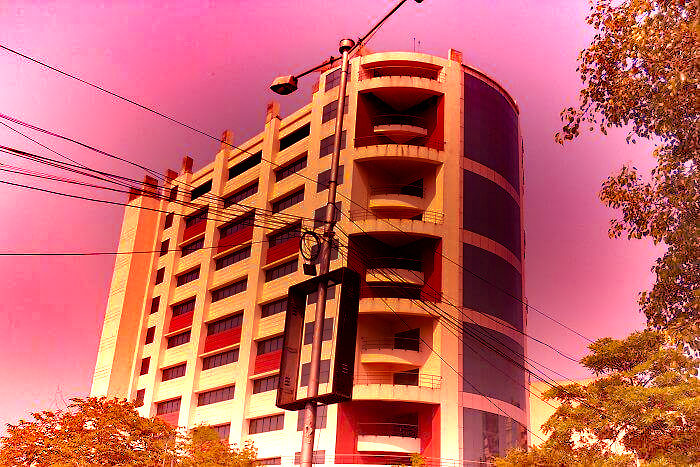
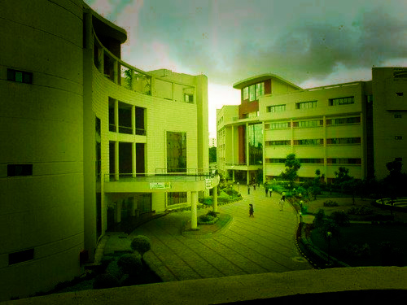

If you are coming to Kolkata for work with an IT company, then there are chances you are staying at a hotel in Salt Lake City. Seems like some ghosts here are really tech-savvy as they have apparently taken a real liking to the Wipro office here. Salt Lake City or Bidhannagar is said to be built on a wetland, and the plot, where the Wipro office stands now, was supposed to be a graveyard. Remember the dollhouse episode of F.R.I.E.N.D.S where Phoebe imagines that it was built on a Native American graveyard and now has ghosts. As with every so-called haunted place, strange figures are said to be seen by people. Employees working the midnight shift are afraid to use the washroom alone or take the lift because they are afraid of the presence, and consider this to be one of the most haunted places in Kolkata.
People have allegedly seen strange apparitions in the dark. The third floor of Tower 3 is shut since it is haunted by ghosts.

The present day Salt Lake is very different from the wetlands that it used to be. It is said that the Wipro office is built on a graveyard and the residents of that locality have sworn to come across shadows and looming figures in the deepest hours of the night. Workers are strictly warned to not go to the third floor of tower three, which is closed for most times as it is feared to be haunted by many ghosts.
Thus, by now you can very well understand that Kolkata is not only the city of joy but also a city filled with mysteries and the unknown in every nook and corner. It not only sounds scary but also exciting as well, right? Nobody knows how much truth there is in these legends so why don’t you decide to check these up yourself if you aren’t scared already!
People claim to have heard noises of things falling when they use the lift or the staircase to the upper floors. The security guards complain of hearing noises all night while they are on duty.
THE END
Thanks,
Feel The Fear